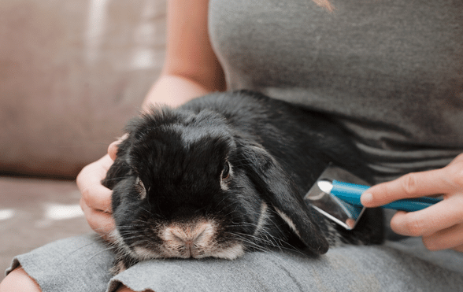

Rabbits are very clean animals, but they need the PurrPets touch to stay healthy during shedding season. Proper grooming prevents life-threatening digestive blockages!

| Tool | Purpose | Frequency |
|---|---|---|
| Slicker Brush | Removing loose undercoat fur. | Weekly (Daily when shedding). |
| Cat Nail Clippers | Trimming sharp claws. | Every 4-6 weeks. |
| Flashlight | Finding the "Quick" in dark nails. | During nail trims. |
| Cornstarch | Stopping bleeding if a nail is cut too short. | Emergency only. |
Never give your rabbit a full bath! Water can cause rabbits to go into fatal shock. Their fur takes a long time to dry, which can lead to hypothermia or skin infections. If they get dirty, use a damp cloth for a "spot clean" only.
Rabbit nails grow in a curve and can get caught in carpets or blankets, causing painful breaks. At PurrPets, we recommend the "Bunny Burrito" method: wrap your rabbit snugly in a towel (leaving only one paw out at a time) to keep them calm and still while you trim.